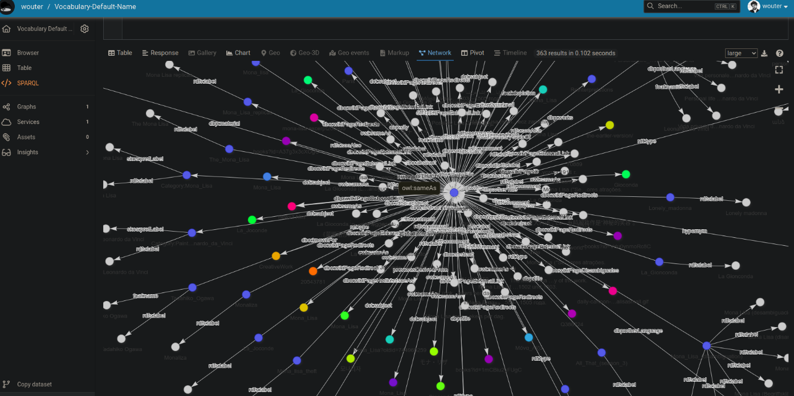

Each Triply instance has a fully RESTful API. All functionality, from managing the Triply instance to working with your data, is done through the API. This document describes the general setup of the API, contact support@triply.cc for more information.
Authentication
When a dataset is published publicly, most of the read operation on that dataset can be performed without authentication.
Write operations and read operations on datasets that are published internally or privately require authentication.
Creating an API token
Authentication is implemented through API tokens. An API token can be created within the TriplyDB UI in the following way:
- Log into your TriplyDB instance.
- Click on the user menu in the top-right corner and click on “User settings”.
- Go to the “API tokens” tab.
- Click the “Create token” button, enter a description for the token (e.g., “test-token”) and select the appropriate access rights.
- Click on “Create” and copy the created API token (a lengthy string of characters). This string is only shown once, upon creation, and must not be shared with others. (Other users can create their own token in the here described way.)
Using the API token
API tokens are used by specifying them in an HTTP request header as follows:
Authorization: Bearer TOKEN
In the above, TOKEN should be replaced by your personal API token (a
lengthy sequence of characters). See Creating an API token for
information on how to create an API token.
Exporting linked data
Every TriplyDB API path that returns linked data provides a number of serializations to choose from. We support the following serializations:
| Serialization | Media type | File extension |
|---|---|---|
| TriG | application/trig |
.trig |
| N-Triples | application/n-triples |
.nt |
| N-Quads | application/n-quads |
.nq |
| Turtle | text/turtle |
.ttl |
| JSON-LD* | application/ld+json |
.jsonld |
To request a serialization, use one of the following mechanisms:
- Add an
Acceptheader to the request. E.g.Accept: application/n-triples - Add the extension to the URL path. E.g. https://api.triplydb.com/datasets/Triply/iris/download.nt
* Downloading datasets in JSON-LD format is not supported.
Datasets
Triply API requests are always directed towards a specific URI path. URI paths will often have the following form:
https://api.INSTANCE/datasets/ACCOUNT/DATASET/
Upper-case letter words must be replaced by the following values:
INSTANCE:: The host name of the TriplyDB instance that you want to use.ACCOUNT:: The name of a specific user or a specific organization.DATASET:: The name of a specific dataset.
Here is an example of a URI path that points to the Triply API for the Pokémon dataset:
https://api.triplydb.com/datasets/academy/pokemon/
Accounts
Information about TriplyDB accounts (organizations and users) can be retrieved from the following API path:
https://api.INSTANCE/accounts
Upper-case letter words must be replaced by the following values:
INSTANCE:: The host name of the TriplyDB instance that you want to use.
Here is an example of a URI path that points to the Triply API for the Triply organization account:
https://api.triplydb.com/accounts/Triply
Queries {#queries}
TriplyDB allows users to save SPARQL queries. The metadata for all saved query can be accessed as follows:
https://api.triplydb.com/queries
By adding an account name (for example: 'Triply'), metadata for all saved queries for that account can be accessed as follows:
https://api.triplydb.com/queries/Triply
By adding an account name and a query name (for example: 'Triply/flower-length'), metadata for one specific saved query can be accessed as follows:
https://api.triplydb.com/queries/Triply/flower-length
Query metadata (GRLC) {#grlc}
You can retrieve a text-based version of each query, by requesting the text/plain content type:
curl -vL -H 'Accept: text/plain' 'https://api.triplydb.com/queries/JD/pokemonNetwork'
This returns the query string, together with metadata annotations. These metadata annotations use the GRLC format. For example:
#+ description: This query shows a small subgraph from the Pokemon dataset.
#+ endpoint: https://api.triplydb.com/datasets/academy/pokemon/services/pokemon/sparql
#+ endpoint_in_url: false
construct where { ?s ?p ?o. }
limit 100
Notice that the GRLC annotations are encoded in SPARQL comments, i.e. lines that start with the hash character (#). This makes the result immediately usable as a SPARQL query.
The above example includes the following GRLC annotations:
descriptiongives a human-readable description of the meaning of the query. This typically includes an explanation of the purpose or goal for which this query is used, the content returned, or the process or task in which this query is used.endpointThe URL of the SPARQL endpoint where queries are sent to.endpoint_in_urlconfigures whether the URL of the SPARQL endpoint should be specified through the API. In TriplyDB, this configuration is by default set tofalse. (Users of the REST API typically expect domain parameters such ascountryNameormaximumAge, but they do not necessarily expect technical parameters like an endpoint URL.)
LD Browser API
Triply APIs provide a convenient way to access data used by LD Browser, which offers a comprehensive overview of a specific IRI. By using Triply API for a specific IRI, you can retrieve the associated 'document' in the .nt format that describes the IRI.
To make an API request for a specific instance, you can use the following URI path:
https://api.triplydb.com/datasets/ACCOUNT/DATASET/describe.nt?resource=RESOURCE
To illustrate this, let's take the example of the DBpedia dataset and the specific instance of 'Mona Lisa'. If you use this URI path:
https://api.triplydb.com/datasets/DBpedia-association/dbpedia/describe.nt?resource=http%3A%2F%2Fdbpedia.org%2Fresource%2FMona_Lisa
in your browser, the .nt document describing the 'Mona Lisa' instance will be automatically downloaded. You can then upload this file to a dataset and visualize it in a graph. Figure 1 illustrates the retrieved graph for the ‘Mona Lisa’ instance.

The requested resource will be displayed in the center of the graph, forming an 'ego graph'. It will include all direct properties, as well as some indirect properties that are also pulled in by LD Browser. The labels for all classes and properties will be included for easy human-readable display.
In addition, this API also supports traversing blank node-replacing well-known IRIs (CBD style), and limits the number of objects per subject/property to manage the description size. This corresponds to the "Show more" button in the LD Browser GUI, ensuring a manageable and user-friendly experience.
Triple Pattern Fragments (TPF)
Triple Pattern Fragments (TPF) is a community standard that allows individual linked datasets to be queried for Triply Patterns (TP), a subset of the more complex SPARQL query language. The Triply API implements Triple Pattern Fragments version 2019-01-18 and Linked Data Fragments version 2016-06-05.
The Triple Pattern Fragments (TPF) API is available for all datasets in Triply and does not require running a dedicated service.
URI path
TPF requests are sent to the following URI path:
https://api.INSTANCE/datasets/ACCOUNT/DATATSET/fragments
Reply format
Since TPF replies distinguish between data and metadata that are stored in different graphs, it is recommended to request the TriG content type with the following HTTP request header:
Accept: application/trig
Query parameters
Triple Pattern Fragments (TPF) uses the following query parameters in order to retrieve only those triples that adhere to a specified Triple Pattern:
| Key | Value | Purpose |
|---|---|---|
subject |
A URL-encoded IRI. | Only return triples where the given IRI appears in the subject position. |
predicate |
A URL-encoded IRI. | Only return triples where the given IRI appears in the predicate position. |
object |
A URL-encoded IRI or literal. | Only return triples where the given IRI or literal appears in the object position. |
Example request
curl -G \
'https://api.triplydb.com/datasets/academy/pokemon/fragments' \
--data-urlencode 'predicate=http://www.w3.org/2000/01/rdf-schema#label' \
-H 'Accept: application/trig'
Exporting data
To export the linked data, use the following path:
https://api.INSTANCE/datasets/ACCOUNT/DATATSET/download
Query parameters
By default, an export includes all linked data graphs. Use a query argument to specify a particular graph.
| Key | Value | Purpose |
|---|---|---|
graph |
A URL-encoded IRI. | Only download the export of the given graph IRI. |
Therefore, to export the linked data of a graph, use the following path:
https://api.INSTANCE/datasets/ACCOUNT/DATATSET/download/?graph=GRAPH
To find out which graphs are available, use the following path:
https://api.INSTANCE/datasets/ACCOUNT/DATATSET/graphs
Example requests
Export a dataset:
curl 'https://api.triplydb.com/datasets/academy/pokemon/download' \
-H 'Accept: application/trig' > exportDataset.trig.gz
Export a graph:
First, find out which graphs are available:
curl 'https://api.triplydb.com/datasets/academy/pokemon/graphs'
Then, download one of the graph:
curl 'curl 'https://api.triplydb.com/datasets/academy/pokemon/download?graph=https://triplydb.com/academy/pokemon/graphs/data' -H 'Accept: application/trig' > exportGraph.trig.gz
Services
Some API requests require the availability of a specific service over the dataset. These requests are directed towards a URI path of the following form:
https://api.INSTANCE/datasets/ACCOUNT/DATASET/services/SERVICE/
Upper-case letter words must be replaced by the following values:
-
SERVICE:: The name of a specific service that has been started for the corresponding dataset. -
See the previous section for Datasets to learn the meaning of
INSTANCE,ACCOUNT, andDATASET.
Here is an example of a URI path that points to a SPARQL endpoint over the Pokémon dataset:
https://api.triplydb.com/datasets/academy/pokemon/services/pokemon/sparql
See the following sections for more information on how to query the endpoints provided by services: - SPARQL - Elasticsearch
SPARQL
There are two service types in TriplyDB that expose the SPARQL 1.1 Query Language: "Sparql" and "Jena". The former works well for large quantities of instance data with a relatively small data model; the latter works well for smaller quantities of data with a richer data model.
SPARQL services expose a generic endpoint URI at the following location (where ACCOUNT, DATASET and SERVICE are user-chosen names):
https://api.triplydb.com/datasets/ACCOUNT/DATASET/services/SERVICE/sparql
Everybody who has access to the dataset also has access to its services, including its SPARQL services:
- For Public datasets, everybody on the Internet or Intranet can issue queries.
- For Internal datasets, only users that are logged into the triple store can issue queries.
- For Private datasets, only users that are logged into the triple store and are members of ACCOUNT can issue queries.
Notice that for professional use it is easier and better to use saved queries. Saved queries have persistent URIs, descriptive metadata, versioning, and support for reliable large-scale pagination (see how to use pagination with saved query API). Still, if you do not have a saved query at your disposal and want to perform a custom SPARQL request against an accessible endpoint, you can do so. TriplyDB implements the SPARQL 1.1 Query Protocol standard for this purpose.
Sending a SPARQL Query request
According to the SPARQL 1.1 Protocol, queries can be send in the 3 different ways that are displayed in Table 1. For small query strings it is possible to send an HTTP GET request (row 1 in Table 1). A benefit of this approach is that all information is stored in one URI. For public data, copy/pasting this URI in a web browser runs the query. For larger query strings it is required to send an HTTP POST request (rows 2 and 3 in Table 1). The reason for this is that longer query strings result in longer URIs when following the HTTP GET approach. Some applications do not support longer URIs, or they even silently truncate them resulting in an error down the line. The direct POST approach (row 3 in Table 1) is the best of these 3 variants, since it most clearly communicates that it is sending a SPARQL query request (see the Content-Type column).
| HTTP Method | Query String Parameters | Request Content-Type |
Request Message Body | |
|---|---|---|---|---|
| query via GET | GET | query (exactly 1)default-graph-uri (0 or more)named-graph-uri (0 or more) |
none | none |
| query via URL-encoded POST | POST | none | application/x-www-form-urlencoded |
URL-encoded, ampersand-separated query parameters.query (exactly 1)default-graph-uri (0 or more)named-graph-uri (0 or more) |
| query via POST directly | POST | default-graph-uri (0 or more)named-graph-uri (0 or more) |
application/sparql-query |
Unencoded SPARQL query string |
SPARQL Query result formats
SPARQL services are able to return results in different formats. The user can specify the preferred format by specifying the corresponding Media Type in the HTTP Accept header. TriplyDB supports the following Media Types. Notice that the chosen result format must be supported for your query form.
| Result format | Media Type | Query forms |
|---|---|---|
| CSV | text/csv |
SELECT |
| JSON | application/json |
ASK, SELECT |
| JSON-LD | application/ld+json |
CONSTRUCT, DESCRIBE |
| N-Quads | application/n-quads |
CONSTRUCT, DESCRIBE |
| N-Triples | application/n-triples |
CONSTRUCT, DESCRIBE |
| RDF/XML | application/rdf+xml |
CONSTRUCT, DESCRIBE |
| SPARQL JSON | application/sparql-results+json |
ASK, SELECT |
| SPARQL XML | application/sparql-results+xml |
ASK, SELECT |
| TriG | application/trig |
CONSTRUCT, DESCRIBE |
| TSV | text/tab-separated-values |
SELECT |
| Turtle | text/turtle |
CONSTRUCT, DESCRIBE |
Examples of SPARQL Query requests
This section contains examples of SPARQL HTTP requests. The requests run either of the following two SPARQL queries against a public SPARQL endpoint that contains data about Pokemon:
select * { ?s ?p ?o. } limit 1
construct where { ?s ?p ?o. } limit 1
The examples made use of the popular command-line tool cURL. These examples should also work in any other HTTP client tool or library.
GET request
curl https://api.triplydb.com/datasets/academy/pokemon/services/pokemon/sparql?query=select%20%2A%20%7B%20%3Fs%20%3Fp%20%3Fo.%20%7D%20limit%201
Result:
[
{
"s": "https://triplydb.com/academy/pokemon/vocab/",
"p": "http://www.w3.org/1999/02/22-rdf-syntax-ns#type",
"o": "http://www.w3.org/2002/07/owl#Ontology"
}
]
URL-encoded POST request
curl -X POST https://api.triplydb.com/datasets/academy/pokemon/services/pokemon/sparql \
-H 'Content-Type: application/x-www-form-urlencoded' \
--data query=select%20%2A%20%7B%20%3Fs%20%3Fp%20%3Fo.%20%7D%20limit%201
Result:
[
{
"s": "https://triplydb.com/academy/pokemon/vocab/",
"p": "http://www.w3.org/1999/02/22-rdf-syntax-ns#type",
"o": "http://www.w3.org/2002/07/owl#Ontology"
}
]
Direct POST request
curl -X POST https://api.triplydb.com/datasets/academy/pokemon/services/pokemon/sparql \
-H 'Content-Type: application/sparql-query' \
-d 'select * { ?s ?p ?o } limit 1'
Result:
[
{
"s": "https://triplydb.com/academy/pokemon/vocab/",
"p": "http://www.w3.org/1999/02/22-rdf-syntax-ns#type",
"o": "http://www.w3.org/2002/07/owl#Ontology"
}
]
SPARQL JSON
Like the previous example, but with an Accept header that specifies Media Type application/sparql-results+json:
curl -X POST https://api.triplydb.com/datasets/academy/pokemon/services/pokemon/sparql \
-H 'Accept: application/sparql-results+json' \
-H 'Content-Type: application/sparql-query' \
-d 'select * { ?s ?p ?o } limit 1'
Result:
{
"head": {
"vars": ["s", "p", "o"]
},
"results": {
"bindings": [
{
"s": {
"type": "uri",
"value": "https://triplydb.com/academy/pokemon/vocab/"
},
"p": {
"type": "uri",
"value": "http://www.w3.org/1999/02/22-rdf-syntax-ns#type"
},
"o": {
"type": "uri",
"value": "http://www.w3.org/2002/07/owl#Ontology"
}
}
]
}
}
SPARQL XML
Like the previous example, but with Media Type application/sparql-results+xml in the Accept header:
curl -X POST https://api.triplydb.com/datasets/academy/pokemon/services/pokemon/sparql \
-H 'Accept: application/sparql-results+xml' \
-H 'Content-Type: application/sparql-query' \
-d 'select * { ?s ?p ?o } limit 1'
Result:
<sparql xmlns="http://www.w3.org/2005/sparql-results#" xmlns:xsi="http://www.w3.org/2001/XMLSchema-instance" xsi:schemaLocation="http://www.w3.org/2001/sw/DataAccess/rf1/result2.xsd">
<head>
<variable name="s"/>
<variable name="p"/>
<variable name="o"/>
</head>
<results distinct="false" ordered="true">
<result>
<binding name="s">
<uri>https://triplydb.com/academy/pokemon/vocab/</uri>
</binding>
<binding name="p">
<uri>http://www.w3.org/1999/02/22-rdf-syntax-ns#type</uri>
</binding>
<binding name="o">
<uri>http://www.w3.org/2002/07/owl#Ontology</uri>
</binding>
</result>
</results>
</sparql>
SPARQL tab-separated values
Like the previous examples, but with Media Type text/tab-separated-values in the Accept header:
curl -X POST https://api.triplydb.com/datasets/academy/pokemon/services/pokemon/sparql \
-H 'Accept: text/tab-separated-values' \
-H 'Content-Type: application/sparql-query' \
-d 'select * { ?s ?p ?o } limit 1'
"s" "p" "o"
"https://triplydb.com/academy/pokemon/vocab/" "http://www.w3.org/1999/02/22-rdf-syntax-ns#type" "http://www.w3.org/2002/07/owl#Ontology"
SPARQL comma-separated values
Like the previous examples, but with Media Type text/csv in the Accept header:
curl -X POST https://api.triplydb.com/datasets/academy/pokemon/services/pokemon/sparql \
-H 'Accept: text/csv' \
-H 'Content-Type: application/sparql-query' \
-d 'select * { ?s ?p ?o } limit 1'
Result:
"s","p","o"
"https://triplydb.com/academy/pokemon/vocab/","http://www.w3.org/1999/02/22-rdf-syntax-ns#type","http://www.w3.org/2002/07/owl#Ontology"
JSON-LD
Like the previous examples, but with a SPARQL construct query and Media Type application/ld+json in the Accept header:
curl -X POST https://api.triplydb.com/datasets/academy/pokemon/services/pokemon/sparql \
-H 'Accept: application/ld+json' \
-H 'Content-Type: application/sparql-query' \
-d 'construct where { ?s ?p ?o } limit 1'
Result:
{ "@graph": [
{ "@id": "https://triplydb.com/academy/pokemon/vocab/",
"@type": "http://www.w3.org/2002/07/owl#Ontology" }
] }
N-Quads
Like the previous examples, but with Media Type application/n-quads in the Accept header:
curl -X POST https://api.triplydb.com/datasets/academy/pokemon/services/pokemon/sparql \
-H 'Accept: application/n-quads' \
-H 'Content-Type: application/sparql-query' \
-d 'construct where { ?s ?p ?o } limit 1'
Result:
{ "@graph": [
{ "@id": "https://triplydb.com/academy/pokemon/vocab/",
"@type": "http://www.w3.org/2002/07/owl#Ontology" }
] }
N-Triples
Like the previous examples, but with Media Type application/n-triples in the Accept header:
curl -X POST https://api.triplydb.com/datasets/academy/pokemon/services/pokemon/sparql \
-H 'Accept: application/n-triples' \
-H 'Content-Type: application/sparql-query' \
-d 'construct where { ?s ?p ?o } limit 1'
Result:
<https://triplydb.com/academy/pokemon/vocab/> <http://www.w3.org/1999/02/22-rdf-syntax-ns#type> <http://www.w3.org/2002/07/owl#Ontology> .
TriG
Like the previous examples, but with Media Type application/trig in the Accept header:
curl -X POST https://api.triplydb.com/datasets/academy/pokemon/services/pokemon/sparql \
-H 'Accept: application/trig' \
-H 'Content-Type: application/sparql-query' \
-d 'construct where { ?s ?p ?o } limit 1'
Result:
@prefix rdf: <http://www.w3.org/1999/02/22-rdf-syntax-ns#> .
@prefix owl: <http://www.w3.org/2002/07/owl#> .
<https://triplydb.com/academy/pokemon/vocab/> rdf:type owl:Ontology .
Turtle
Like the previous examples, but with Media Type text/turtle in the Accept header:
curl -X POST https://api.triplydb.com/datasets/academy/pokemon/services/pokemon/sparql \
-H 'Accept: text/turtle' \
-H 'Content-Type: application/sparql-query' \
-d 'construct where { ?s ?p ?o } limit 1'
Result:
@prefix rdf: <http://www.w3.org/1999/02/22-rdf-syntax-ns#> .
@prefix owl: <http://www.w3.org/2002/07/owl#> .
<https://triplydb.com/academy/pokemon/vocab/> rdf:type owl:Ontology .
Elasticsearch
The text search API returns a list of linked data entities based on a supplied text string. The text string is matched against the text in literals and IRIs that appear in the linked data description of the returned entities.
The text search API is only available for a dataset after an Elasticsearch service has been created for that dataset.
Two types of searches can be performed: a simple search, and a custom search. Simple searches require one search term for a fuzzy match. Custom searches accept a JSON object conforming to the Elasticsearch query DSL.
URI path
Text search requests are sent to the following URI path:
https://api.INSTANCE/datasets/ACCOUNT/DATASET/services/SERVICE/search
Reply format
The reply format is a JSON object. Search results are returned in the
JSON array that is stored under key sequence "hits"/"hits". The
order in which search results appear in the array is meaningful:
better matches appear earlier.
Every search result is represented by a JSON object. The name of the
linked data entity is specified under key sequence "_id".
Properties of the linked data entity are stored as IRI keys. The
values of these properties appear in a JSON array in order to allow
more than one object term per predicate term (as is often the case in
linked data).
The following code snippet shows part of the reply for the below example request. The reply includes two results for search string “mew”, returning the Pokémon Mew (higher ranked result) and Mewtwo (lower ranked result).
{
"hits": {
"hits": [
{
"_id": "https://triply.cc/academy/pokemon/id/pokemon/mew",
"http://open vocab org/terms/canonicalUri": [ "http://pokedex.dataincubator.org/pokemon/151" ],
"https://triply cc/academy/pokemon/def/baseAttack": [ 100 ],
"https://triply cc/academy/pokemon/def/name": [ "MEW", "MEW", "MEW", "MEW", "MEW", "ミュウ" ],
…
},
{
"_id": "https://triply.cc/academy/pokemon/id/pokemon/mewtwo",
"http://open vocab org/terms/canonicalUri": [ "http://pokedex.dataincubator.org/pokemon/150" ],
"https://triply cc/academy/pokemon/def/baseAttack": [ 110 ],
"https://triply cc/academy/pokemon/def/name": [ "MEWTU", "MEWTWO", "MEWTWO", "MEWTWO", "MEWTWO", "ミュウツー" ],
…
}
]
},
…
}
Examples
Simple search
Perform a search for the string mew:
curl 'https://api.triplydb.com/datasets/academy/pokemon/services/search/search?query=mew'
Custom search
Perform a search using the custom query:
{
"query": {
"simple_query_string": {
"query": "pikachu"
}
}
}
curl -X POST 'https://api.triplydb.com/datasets/academy/pokemon/services/search/search' \
-d '{"query":{"simple_query_string":{"query":"pikachu"}}}' \
-H 'content-type: application/json'